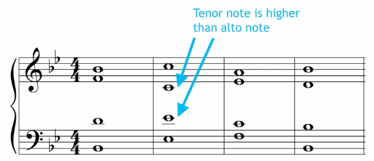
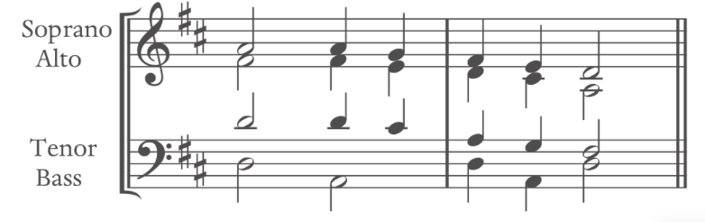
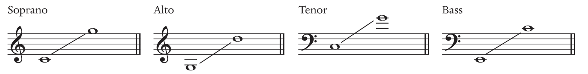
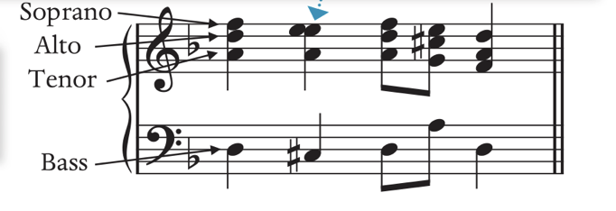
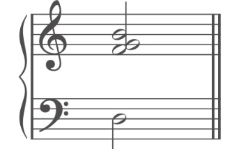
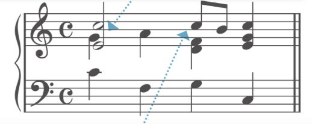

Terms
Some Term Definition Link to heading
Chord Skips: A chord skip occurs when one chord tone skips to another tone within the same harmony.
Voice Crossing: Where the lower registration sings higher than higher voices. i.e. Alto sings higher than the Soprano. Hard to tell which part is singing which notes.

Voice Overlap: Where the lower registration sings higher than higher voices in the previous chord. i.e. Alto sings higher than the Soprano in the previous chord. Crossing the in next chord.
Voice Exchange: When the same note is sung at a different registration.
Cadences: Cadences should always be in their root position.
Syncopation: A repeating a weak chord to a strong chord. The only exception is that when there is a pickup, they may appear in the weak beat.
Cadence: In a cadence, the tonic and dominant chord should be in the root position.
Diatonic: uses accidental within the key signature
Chromatic: uses accidentals outside of the key signature
Pivot modulation: diatonic modulation with overlap, uses a shared chord
direct modulation: goes directly into the new key with no overlap
common-tone: uses a note as a pivot tones, and there are others.
Anacrusis: term for pickup
Focal Pitch: Helps explain the music without a specific tonal -> atonality music : central emphasis note: What note is being heard the most often/emphasized
Pitch class: all of the note with that name. i.e. G, which includes G1-G6
Four-part Harmony Link to heading
SATB format Link to heading

SATB Range Link to heading

Avoid each voice to be an octave apart, except the bass Avoid voice crossing: i.e. bass higher than tenor; soprano lower than alto
Keyboard format Link to heading

Stem and Notation Link to heading
- The upper of the second is always on the right
- The stem is the opposite if the rhythm is different
- The top three notes are placed within an octave
- Triad note doubling: usually preferable to the root bass or second inversion bass

